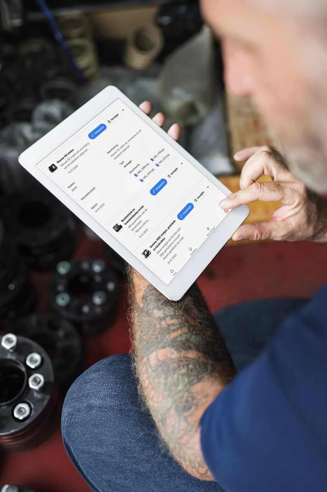
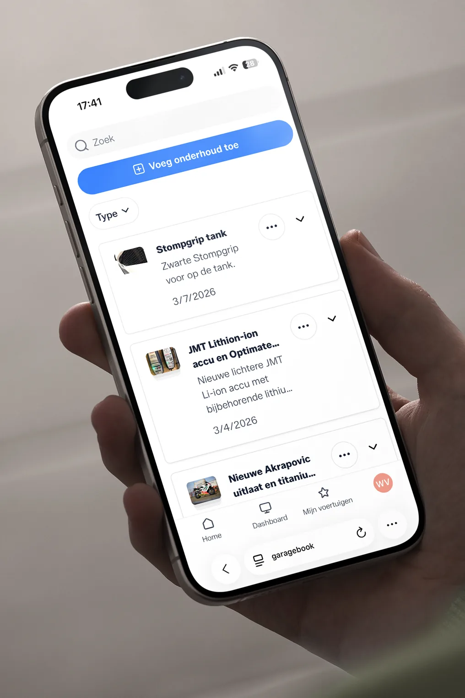

Intro
Wie een modern voertuig bijhoudt, denkt aan beurten, APK en een factuur in de map. Wie een oldtimer of youngtimer bezit, weet dat het verhaal anders ligt. De onderhoudshistorie van een klassieker is niet alleen een administratief overzicht. Het is bewijs van hoe de auto is behandeld, welke keuzes zijn gemaakt en waarom de auto de staat heeft die hij nu heeft.
Dat betekent dat je een onderhoudsboekje voor een oldtimer of een onderhoudsboekje voor een youngtimer anders invult dan het boekje van een gewone auto. Niet moeilijker, maar wel met meer lagen. In dit artikel lees je wat er anders is, wat erin moet en hoe je dat het best digitaal aanpakt.
Artikel
Wat is anders bij een oldtimer of youngtimer?
Bij een gewone auto draait een onderhoudsboekje om functionaliteit: is het onderhoud gedaan, is de APK in orde, zijn de grote beurten gedaan? Bij een oldtimer of youngtimer komen daar minstens drie extra lagen bij:
- Originaliteit: wat is nog origineel en wat is vervangen? En als iets is vervangen, noteer dan door welk onderdeel, door welke leverancier en waarom.
- Restauratiehistorie: welke werkzaamheden zijn er buiten regulier onderhoud uitgevoerd, in welke volgorde en met welk resultaat?
- Waardedocumentatie: taxatierapporten, verzekeringsdocumenten, historische foto's en bewijsstukken die de staat van de auto onderbouwen.
Die drie lagen maken het onderhoudsboekje van een klassieker tot een document dat niet alleen vertelt wat er gedaan is, maar ook waarom de auto de waarde heeft die hij heeft.
Wat hoort in een onderhoudsboekje voor een oldtimer?
Naast de standaard onderhoudsmomenten, zoals olie, remmen, vloeistoffen en banden, horen bij een oldtimer ook de volgende elementen in het dossier:
- Restauratiefases: per stap wat er is gedaan, welke foto's daarbij horen en welke onderdelen zijn gebruikt.
- Revisies van motor, versnellingsbak, remsysteem, carburateurs of ophanging.
- Lakwerk: volledig of gedeeltelijk bijgewerkt, door wie, in welke kleurcode?
- Onderdelenhistorie: origineel vs. vervangen, inclusief leverancier en reden van vervanging.
- Taxatierapporten en verzekeringsdocumenten, inclusief datum en taxateur.
- APK-histoire, ook als de oldtimer APK-vrijgesteld is geweest.
- Informatie over vorige eigenaren, als die beschikbaar en relevant is.
- Bijzondere ritten, tentoonstellingen of historische momenten die bij de auto horen.
Dat klinkt als veel, maar je bouwt het stap voor stap op. Je hoeft niet alles ineens te hebben. Elk moment dat je nu toevoegt, maakt het dossier sterker.
Wat hoort in een onderhoudsboekje voor een youngtimer?
Een youngtimer vraagt deels om dezelfde aanpak als een gewone auto, maar heeft een paar specifieke aandachtspunten die je niet mag overslaan:
- Roestcontrole en -behandeling: wanneer is er geïnspecteerd, wat is er gevonden en wat is er gedaan?
- Distributieriem of -ketting: wanneer vervangen, door wie en welk merk riem of kit is gebruikt?
- Rubbers, afdichtingen en dichtingen: die worden bij youngtimers oud en zijn niet altijd meer leverbaar.
- Keuzes voor originele vs. aftermarket onderdelen, inclusief motivatie.
- Upgrades of aanpassingen en de motivatie daarvoor: is het reversibel? Is het gedocumenteerd?
- Carrosserie- of lakwerkzaamheden, zeker als er roestwerk aan te pas is gekomen.
Voor een youngtimer geldt: wat nu nog relatief goed te vinden is, kan over vijf jaar schaars zijn. Wie vastlegt welke onderdelen zijn gebruikt en hoe de staat was toen die vervanging plaatsvond, heeft later een veel sterker verhaal.
Hoe vul je het digitaal in? Een praktische aanpak
De basis is eenvoudig: voeg elk moment dat je iets doet aan je auto zo snel mogelijk toe aan je digitale dossier. Niet achteraf, maar direct, want dan is de context nog vers en ontbreken er geen details.
Per invoer noteer je minimaal: datum, kilometerstand (ook als je weinig rijdt), een omschrijving van wat er is gedaan, welke onderdelen zijn gebruikt en wat het heeft gekost. Voeg daarna een of twee foto's toe en koppel de factuur als bijlage. Dat is per keer vijf minuten werk die later veel terugzoektijd scheelt.
Voor restauratieprojecten heeft het extra waarde om per fase te werken. Maak aan het begin van een nieuwe fase een invoer met foto's van de beginsituatie, voeg tussentijdse foto's toe en sluit de fase af met een eindresultaat en alle bijbehorende documenten. Zo bouw je een build history op die letterlijk zichtbaar maakt hoe de auto is veranderd.
Waarom digitaal beter werkt dan papier bij klassiekers
Een papieren stempelboekje heeft charme en heeft zijn plek in de oldtimerwereld. Maar als documentatietool schiet het bij klassiekers tekort. Er is geen ruimte voor foto's, geen koppeling met facturen, geen tijdlijn per onderdeel en geen mogelijkheid om het overzichtelijk te delen met een taxateur of koper.
Een digitaal onderhoudsboekje legt die beperkingen weg. Je bewaart alles per voertuig, koppelt documenten en foto's aan elk moment, hebt het altijd bij je op je telefoon en kunt het overdragen aan een volgende eigenaar zonder dat je het boekje mee hoeft te geven. Lees ook meer over onderhoudsboekje oldtimer en onderhoudsboekje youngtimer voor meer specifieke tips.


Meer lezen over oldtimer en youngtimer documentatie
Lees meer op de volledige gids over het onderhoudsboekje, onderhoudsboekje oldtimer, onderhoudsboekje youngtimer, de uitgebreide oldtimer landingspagina, hoe je de historie van een klassieker echt goed bewaart en youngtimer onderhoud digitaal bijhouden.
Veelgestelde vragen
Wat hoort er extra in een onderhoudsboekje voor een oldtimer?
Naast het standaard onderhoud leg je bij een oldtimer ook restauratiefases vast, revisies van motor of versnellingsbak, onderdelenhistorie (origineel vs. vervangen), taxatierapporten, APK-histoire en foto's van werkzaamheden.
Wat verschilt bij een youngtimer ten opzichte van een gewone auto?
Bij een youngtimer let je extra op roestbehandeling, distributieriem- of kettingvervangingen, rubber- en afdichtingswerk en de keuze voor originele versus aftermarket onderdelen. Die details zijn relevant voor waardebehoud en latere verkoop.
Hoe vul ik een onderhoudsboekje digitaal in voor mijn klassieker?
Maak per onderhoud of restauratiemoment een invoer met datum, kilometerstand, omschrijving en de gebruikte onderdelen. Voeg een foto en de bijbehorende factuur toe. Doe dit direct na elk moment zodat context en details niet verloren gaan.
Heeft een taxateur iets aan een digitaal onderhoudsboekje oldtimer?
Ja. Een complete digitale documentatie met restauratiefases, revisies, facturen en foto's geeft een taxateur meer houvast bij het vaststellen van de staat en waarde van een klassieker dan een papieren stempelboekje zonder context.
Bouw het dossier dat je klassieker verdient
Een oldtimer of youngtimer bijhouden vraagt iets meer dan een gewone auto. Maar het resultaat, een compleet en aantoonbaar dossier met onderhoud, restauraties, foto's en bewijs, is dat extra werk meer dan waard.
Start gratis met GarageBook en leg de histoire van je klassieker vast